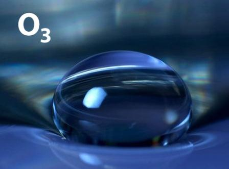

Озонова стерилізація води: максимальна чистота та безпека
Багато компаній використовують хлорування для знезараження води, але в Crystal Water ми застосовуємо сучасніший і безпечніший метод — озонування. Це технологія, яка дає змогу досягти стерильності води без використання агресивної хімії.
Що таке озон і чому він ефективніший за хлор?
Озон (O3) — це надпотужний окисник. Коли він потрапляє у воду, він атакує оболонки мікроорганізмів, миттєво знищуючи їх.
Чому озонування — це стандарт якості?
- Швидкість дії. Озон працює в десятки разів швидше за хлор.
- Повне знищення. Він справляється навіть із тими цистами та вірусами, проти яких безсилі звичайні антисептики.
- Жодних залишків. На відміну від хлору, який залишається у воді у вигляді шкідливих сполук, озон за короткий час розпадається назад на звичайний кисень (O2).
- Покращення смаку. Озон окиснює органічні домішки, прибираючи неприємні запахи та надаючи воді природної свіжості.
Як проходить процес у Crystal Water?
Стерилізація озоном — це фінальний акорд нашої системи очищення. Після того як вода пройшла крізь фільтри та мембрани оберненого осмосу, вона проходить крізь озонову камеру. Це гарантує, що в бутель потрапить вода, яка:
- Абсолютно стерильна.
- Не містить хімічних домішок.
- Має приємний, свіжий смак.
Кому життєво необхідна стерильна вода?
- Батькам новонароджених. Для приготування суміші та годування немовлят потрібна вода з нульовим ризиком бактеріального забруднення.
- Людям з ослабленим імунітетом. Стерильна вода знижує ризик кишкових інфекцій.
- Тим, хто цінує екологічність. Відсутність хлору робить воду природною та безпечною.
Обирайте безпеку, перевірену наукою
Озонована вода від Crystal Water — це гарантія захисту вашого здоров'я. Доставка чистої та безпечної води в Бровари та Київ.
Замовити стерильну воду